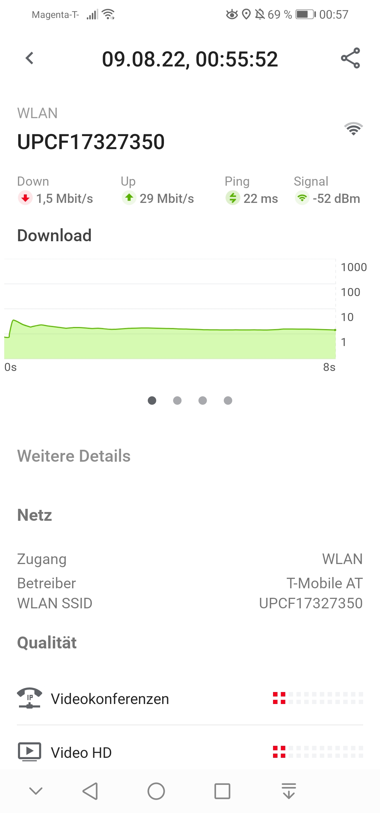

Hallo Leute!
Warum ist die WLAN-DL-Geschwindigkeit seit Tagen unterirdisch?
Ich bin mit Smartphone als Einziger im Haushalt im Netz. Trotzdem unter jeder Sau. 
Bearbeitet von mahler77Ein Update:
WLAN selber scheint in Ordnung zu sein. Ich habe ein zweites Smartphone verwendet (dasselbe Modell wie das "Problemgerät") und den Laptop. Beide messen 250 Mbit.
Und auf meinem Smartphone ist nur der DL betroffen.
Könnte es sein, dass das WLAN auf dem Smartphone hin ist?
Bearbeitet von mahler77Hallo @mahler77 ,
hast du bei deinem Handy geprüft, ob irgendwelche Apps im Hintergrund laufen? Kann vielleicht eine vorhandene Handyhülle den Empfang einschränken?
Für mich ist es eigenartig, dass der Upload doch um so viel höher ist. Wenn der WLAN Empfänger defekt ist, sollte dann nicht beides gleiche Werte erreichen?
LG, JD.
Also, ich habe es ohne Hülle probiert. Kein Unterschied. Die NW-Einstellungen zurückgesetzt, die erste Messung war dann bei 150 Mbit, danach wieder die alte Leier.
Wo kann ich das mit den Apps gezielt nachschauen?
LG
Mario
@mahler77 , wie dir laufende Apps im Hintergrund angezeigt werden, ist von Betriebssystem zu Betriebssystem anders. Nutze eine Suchmaschine und suche dort nach deiner "Handymarke" und "alle Apps schließen". Dann solltest du fündig werden. LG, JD.
Andere Frage...
Kannst du das mal mit einem Netzwerkkabel auf einem PC/NB testen?
Es sieht für mich eher nach einem Auslastungsthema aus aber der Test mit Kabel wäre interessant.
Der PC hängt schon am Kabel und bekommt dieselbe Geschwindigkeiten wie der NB und das Smartphone meiner Frau über WLAN.
Es scheint, dass ich mein Smartphone neuaufsetzen muss, weil auch in anderen WLAN-Netzen die DL-Geschwindigkeit sehr niedrig ist.
Bearbeitet von mahler77
In jedem Fall spannend. Technisch schwer zu erklären, warum das eine Smartphone Probleme macht.
Vielleicht hat der DHCP 2 gleiche Adressen vergeben. Wenn du dich da auskennst - teste doch mal eine fixe freie IP auf dem Problemsmartphone.
{kind=link}
{kind=link}
{kind=link}